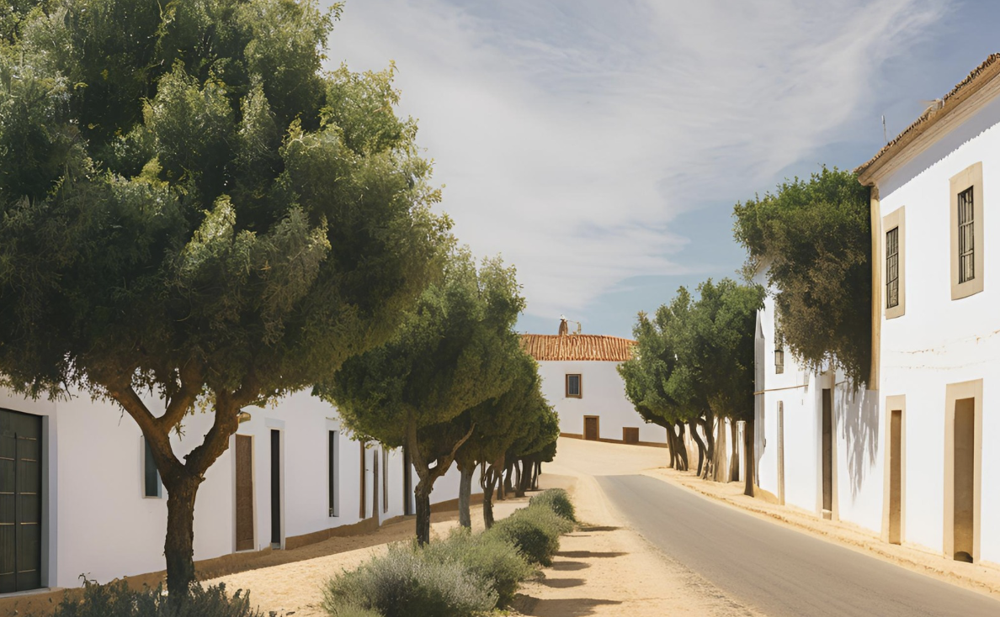
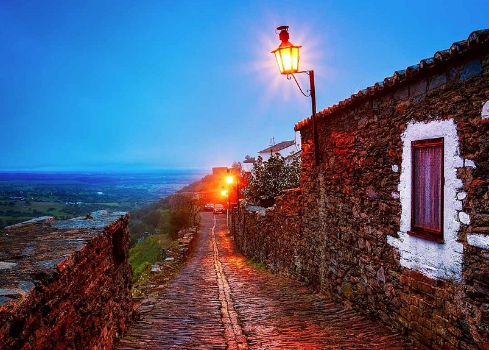

Alentejo
O Alentejo, situado no sul de Portugal, destaca-se pelas suas vastas planícies, aldeias caiadas de branco e uma rica herança cultural. É uma região que convida à serenidade, com paisagens deslumbrantes de campos dourados, olivais e vinhas. A gastronomia alentejana é um dos seus grandes trunfos, com pratos típicos como o ensopado de borrego, a açorda e os queijos regionais, acompanhados pelos seus vinhos de excelência. Repleto de história, o Alentejo abriga cidades como Évora, classificada como Património Mundial pela UNESCO, além de monumentos megalíticos fascinantes.


Vantagens
- Paisagens deslumbrantes e tranquilas, ideais para relaxar.
- Rica gastronomia e vinhos premiados.
- Património histórico e cultural de grande relevância.
- Hospitalidade dos habitantes locais e ambiente acolhedor.
Desvantagens
- Clima quente no verão, que pode ser desconfortável para alguns.
- Algumas áreas são pouco desenvolvidas em termos de infraestrutura turística.
- Distâncias consideráveis entre os principais pontos de interesse.
- Oferta de transporte público limitada em várias localidades.